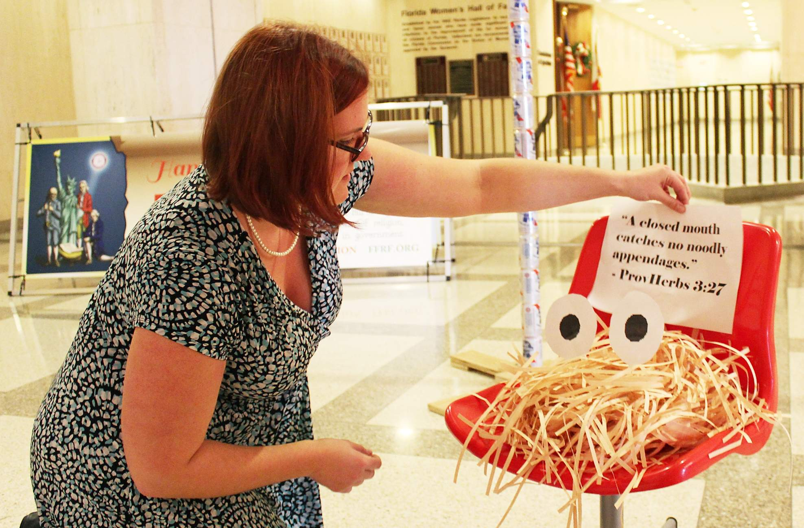

Pastafarianism holidays
Pastafarian beliefs extend into lighthearted religious ceremony. Pastafarians celebrate every Friday as a holy day. Prayers are concluded with a final declaration of affirmation, "R'amen" (or "rAmen"); the term is a parodic portmanteau of the terms "Amen" and "Ramen", referring to instant noodles and to the "noodly appendages" of their deity.
Around the time of Christmas, Hanukkah, and Kwanzaa, Pastafarians celebrate a vaguely defined holiday named "Holiday". Holiday does not take place on "a specific date so much as it is the Holiday season, itself". Because Pastafarians "reject dogma and formalism", there are no specific requirements for Holiday. Pastafarians celebrate Holiday in any manner they please. Pastafarians also celebrate "Pastover" as a parody of Passover, and "Ramendan" as a parody of Ramadan.
Pastafarians interpret the increasing usage of "Happy Holidays", rather than more traditional greetings (such as "Merry Christmas"), as support for Pastafarianism. In December 2005, George W. Bush's White House Christmas greeting cards wished people a happy "holiday season", leading Henderson to write the President a note of thanks, including a "fish" emblem depicting the Flying Spaghetti Monster for his limousine or plane. Henderson also thanked Walmart for its use of the phrase.
